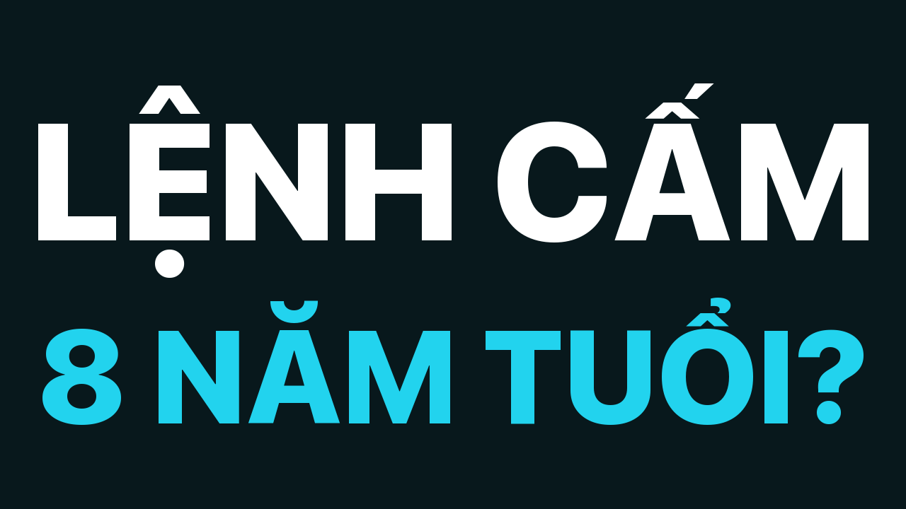
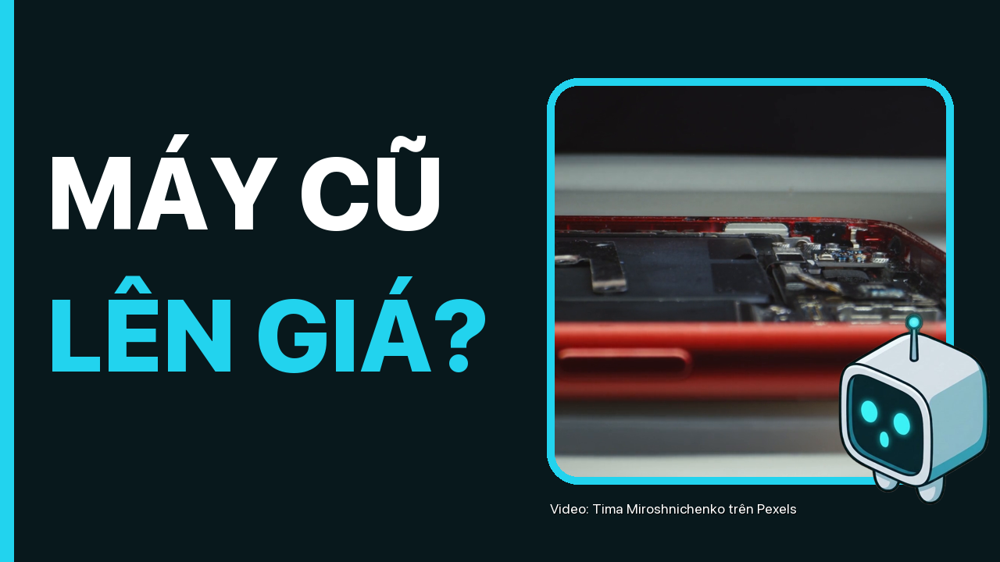
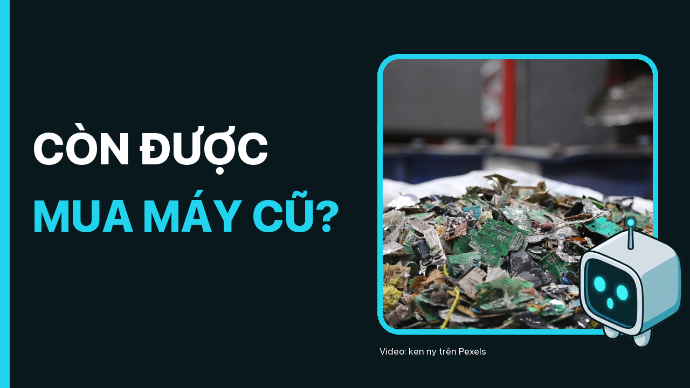

Duyệt 2 · 2026-11-11-cam-nhap-may-cu
6 cảnh báo
- Cảnh báo: 8 hiệu ứng âm thanh/phút, chuẩn ≥ 15
- Cảnh báo: Tốc độ đọc 268 từ/phút, chuẩn 180–265
- Cảnh báo: độ khô: 1 phông khác nhau, cần ≥ 5
- Cảnh báo: độ khô: 5 cảnh liền cùng phông (tối đa 2)
- Cảnh báo: độ khô: 1 cảnh lặp hình chính trong cửa sổ 8 cảnh
- Cảnh báo: độ khô: chỉ 0% cảnh có camera, chuẩn ≥ 15%
Video
Tiêu đề + thumbnail
Phương án 1

Cấm nhập điện thoại cũ từ 2027: lệnh cấm 8 năm tuổi, đổi gì?
Phương án 2

Cấm nhập điện thoại cũ từ 1/1/2027: giá máy cũ có lên không?
Phương án 3

Thông tư 63 cấm nhập máy cũ: còn được mua điện thoại cũ không?
Shorts
Mô tả
Từ 1/1/2027, điện thoại và máy tính đã qua sử dụng bị cấm nhập khẩu vào Việt Nam theo Thông tư 63/2026/TT-BKHCN. Nhưng văn bản mà nó thay thế đã có từ năm 2018. Video đọc thẳng toàn văn thông tư: cấm cái gì, cái gì thật sự mới, và người mua máy cũ bị ảnh hưởng tới đâu. ⏱ Mốc chương 00:00 Lệnh cấm hơn 8 năm tuổi 00:33 Thông tư cấm nhập cái gì? 01:37 Máy tân trang, linh kiện và ngoại lệ 02:32 Lệnh cấm này mới tới đâu? 03:59 Vì sao lại cấm? 04:36 Còn được mua bán máy cũ không? 05:44 Giá máy cũ có lên không? 07:03 Hai việc cần ngóng 07:41 Vậy cái gì thật sự đổi? 📌 Cần biết - Nội dung thông tư đọc từ bản đăng trên LuatVietnam ngày 10/11/2026, chưa đối chiếu với Công báo. - Thông tư 11/2018 chỉ đọc được phần điều khoản qua bản dịch tiếng Anh; bảng mã HS của bản cũ chưa kiểm được, nên video không so từng mã giữa hai thông tư. - Lời của Cục trưởng, luật sư và doanh nghiệp là lời họ nói trên báo, không phải văn bản hướng dẫn của cơ quan nhà nước. Video không phải tư vấn pháp lý. - Giá iPhone 15 Plus là giá ví dụ ghi nhận trên trang máy cũ của CellphoneS ngày 10/11/2026; giá gạch là số cửa hàng niêm yết, chưa chắc là giá máy mới. 📎 Nguồn - Bộ KH&CN · Thông tư 63/2026: https://luatvietnam.vn/xuat-nhap-khau/thong-tu-63-2026-tt-bkhcn-danh-muc-san-pham-cong-nghe-so-cam-nhap-khau-453291-d1.html (truy cập 10/11/2026) - VnExpress: https://vnexpress.net/vi-sao-viet-nam-cam-nhap-khau-dien-thoai-may-tinh-cu-5140643.html (truy cập 10/11/2026) - Tuổi Trẻ: https://tuoitre.vn/cam-nhap-dien-thoai-may-tinh-cu-tu-nam-2027-co-hoi-thanh-loc-thi-truong-hay-noi-lo-khan-hang-10026110319443384.htm (truy cập 10/11/2026) - Dân trí: https://dantri.com.vn/cong-nghe/nguoi-kinh-doanh-dien-thoai-cu-can-lam-gi-truoc-nam-2027-20261104175837440.htm (truy cập 10/11/2026) - CellphoneS · Trang máy cũ: https://cellphones.com.vn/hang-cu/dien-thoai.html (truy cập 10/11/2026) - Bộ TT&TT · Thông tư 11/2018 (bản dịch LuatVietnam): https://english.luatvietnam.vn/circular-no-11-2018-tt-btttt-dated-october-15-2018-of-the-ministry-of-information-and-communications-on-detailing-list-of-used-information-technolog-167961-doc1.html (truy cập 10/11/2026) - Thanh Niên: https://thanhnien.vn/co-nen-cam-nhap-khau-dien-thoai-may-tinh-cu-185261105212932595.htm (truy cập 10/11/2026) 🧮 Số kênh tự tính - 13 nhóm mã HS bốn chữ số trong Phụ lục = đếm số nhóm bốn chữ số trong Phụ lục: 8443, 8470, 8471, 8517, 8518, 8525, 8526, 8527, 8528, 8534, 8540, 8542, 8544 - hơn 8 năm = từ 15/10/2018 tới 01/01/2027: 8 năm và khoảng 2,5 tháng - 7.100.000 đ = 22.990.000 − 15.890.000 🎙 Giọng đọc trong video là giọng tổng hợp.
Tags
cấm nhập điện thoại cũ, Thông tư 63/2026, điện thoại cũ, máy tính cũ, iPhone cũ, hàng xách tay, máy tân trang, giá điện thoại cũ, cấm nhập khẩu 2027, mua máy cũ, thu cũ đổi mới, Bộ Khoa học và Công nghệ